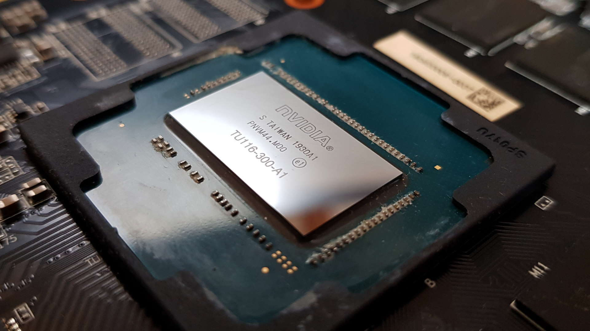
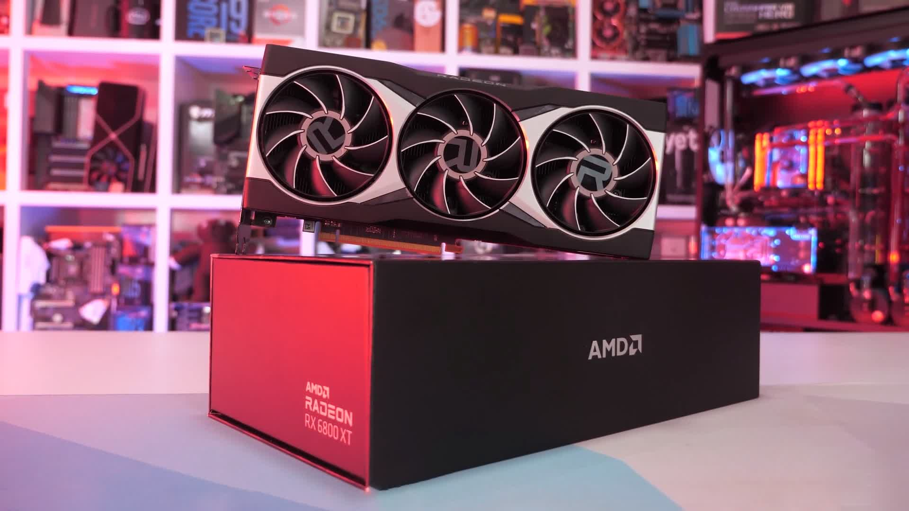
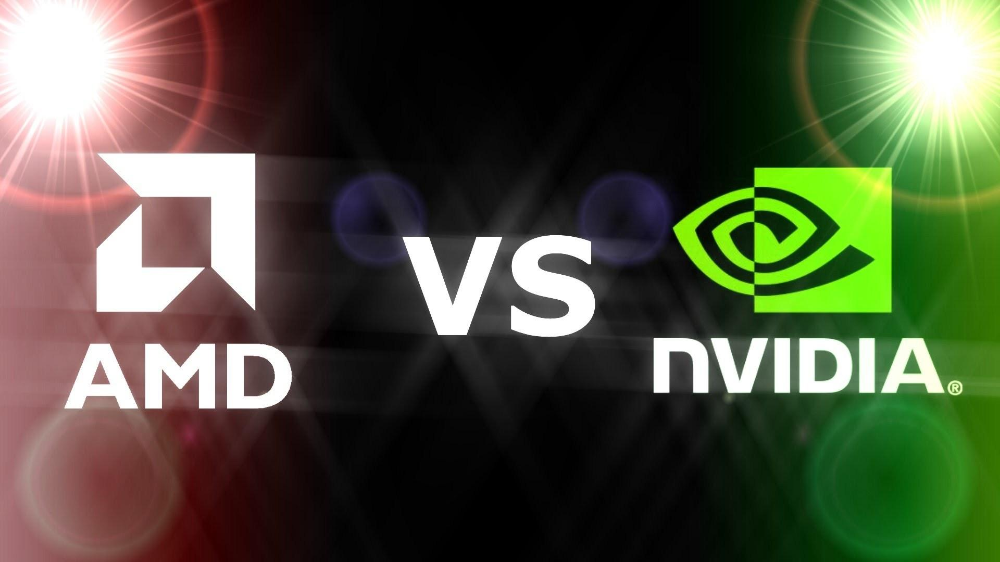
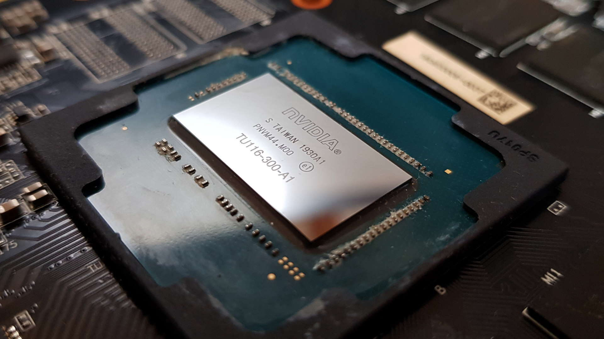
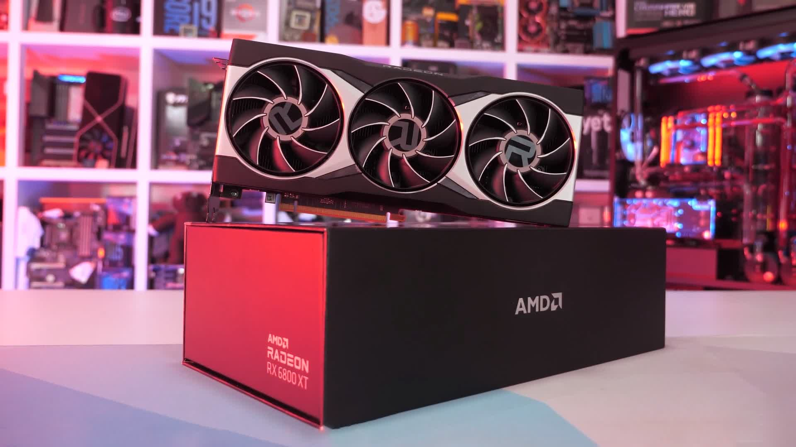
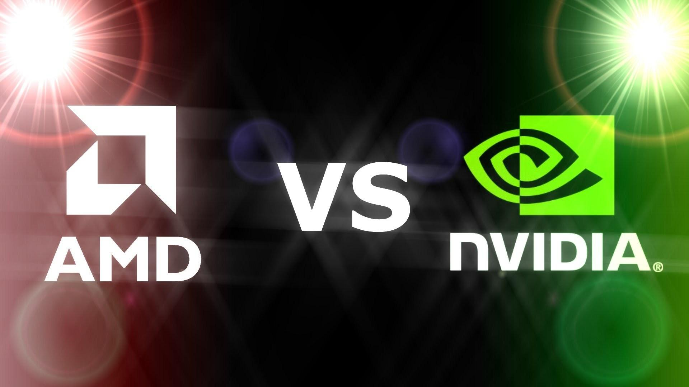

In the CPU section, I mentioned that the CPU is the most important part in a computer. While this is true in most cases, there are a few exceptions. If you want a computer to render videos or to play video games, then a GPU should be your main priority. If you do not need to render large videos or play video games, you could either get a cheaper GPU or not even get one at all. Some CPUs today have integrated graphics that allow a system to not need a seperate GPU in order to work. But first, what exactly does a GPU do? A Graphics Processing Unit (GPU) renders images, videos, and animations. They were designed to accelerate the rendering of 3D graphics and eventually became more flexible and programmable (Intel). Continuing the trend of using the human body as an analogy for a computer, the GPU is like the eyes. The eyes generate visual images and returns that image to the brain.
The GPU helps take an important and demanding job away from the CPU and the RAM. There are two different types of GPUs, discrete and integrated. I briefly mentioned integrated GPUS earlier but essentially they are GPUs that are located on a CPU. This means that the GPU shares memory with the CPU so it would not be ideal for someone who would like to play games or render videos. There are integrated GPUs that can handle playing games well but most prefer discrete graphics cards. Laptops are the main users of integrated graphic cards as there often is not enough space to fit a discrete GPU inside the small body of a laptop. A discrete GPU is recommended to anyone that like to edit or create videos, or plays video games. They have their own RAM, often called VRAM, so it does not have to share memory with the rest of the system.
Similar to CPUs, there are two main manufacturers for GPUs: AMD and Nvidia. AMD has its Radeon series of GPUs while Ryzen is the name of their CPU series. Nvidia had its GTX series of GPUs but recently there newest series of cards are call the RTX series. AMD has also been on the rise when it comes to GPU popularity. Nvidia like Intel has dominated the GPU market until recently where it seems like AMD has taken big steps to catch up to its competition. Both companies provide different models in order to accomodate different budget prices for consumers, often releasing products for low-end budgets all the way to the highest-end budgets. For more information regarding both companies click on the video to the right!
 




